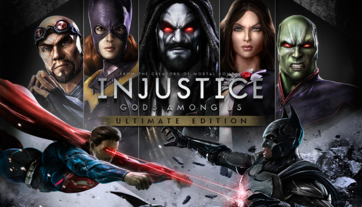

REGRESAR

INJUSTICE
Injustice: Gods Among Us is a 2013 fighting video game. It is the first installment in the Injustice franchise based upon the fictional universe of DC Comics. The game was developed by NetherRealm Studios and published by Warner Bros. Interactive Entertainment for the PlayStation 3, Wii U, and Xbox 360. It was released in April 2013 in North America, Europe, and Australia, and June 2013 in Japan. An expanded version of the game, titled Injustice: Gods Among Us – Ultimate Edition, was released in November 2013 for the PlayStation 3, PlayStation 4, PlayStation Vita, Windows, and Xbox 360. A free-to-play mobile app based on Injustice was also released for iOS and Android devices, which was then ported to arcade machines by Raw Thrills in the fall of 2017, months after the sequel's release. A prequel comic book series of the same name, written by Tom Taylor, was released beginning in January 2013
Players select one of several characters from the DC Universe (consisting of both villains and heroes), to engage in combat, aiming to knock out their opponent. The game is set in a 2.5D environment: while character models and backgrounds are rendered in three-dimensional graphics, the characters are restricted to fight within a two-dimensional space. Injustice builds upon several aspects from NetherRealm Studios' previous title, Mortal Kombat (2011), including its controls, game mechanics, narrative-driven campaign, and online functionality.
The storyline is set in a parallel universe within the DC Comics' Multiverse, where Superman has become a tyrant and established a new world order after the Joker tricked him into killing Lois Lane and destroying Metropolis. In an effort to stop this, Batman summons counterparts of the League's members from the main universe to join his insurgency and end the totalitarian regime. The game received positive reviews from critics, who praised its story, gameplay mechanics, and use of the DC Comics license. Injustice became the highest selling game in the United States and United Kingdom during the month of its release. The game also won several awards for "Best Fighting Game" in 2013.